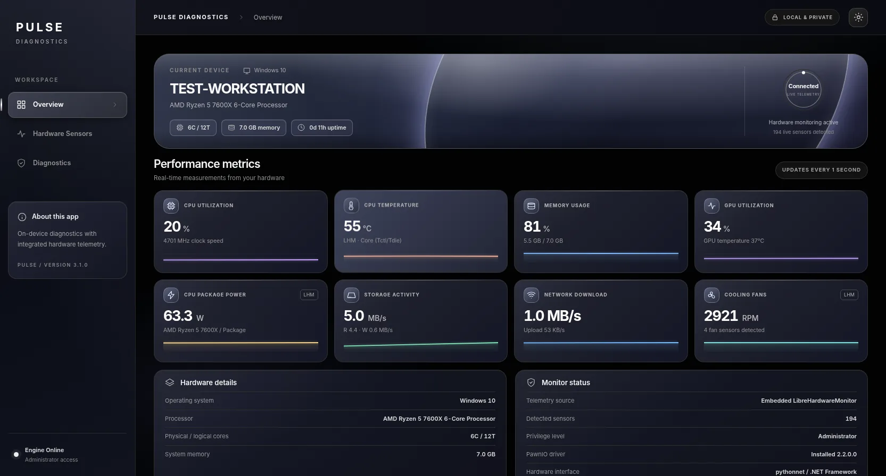
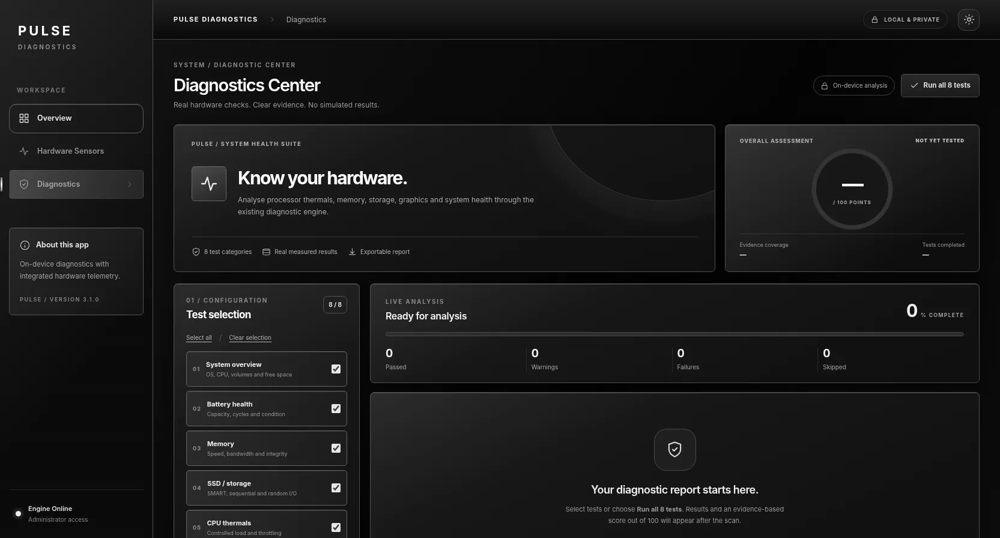

01 / LIVE MONITORING
Telemetry, in real time.
CPU usage and thermals, RAM, GPU activity, package power, storage throughput, network traffic and cooling fans—each with its own history.
A precision-built diagnostics workspace for Windows. See what your system is doing, investigate the sensors behind every reading, and run checks with results you can actually inspect.
THE DESKTOP EXPERIENCE
A focused workspace that brings performance, system information and live history charts together without losing the details.

ENGINEERED FOR CLARITY
01 / LIVE MONITORING
CPU usage and thermals, RAM, GPU activity, package power, storage throughput, network traffic and cooling fans—each with its own history.
02 / SENSOR EXPLORER
Browse actual hardware sensor sources and inspect available readings. Missing or unsupported measurements stay clearly identified.
03 / GUIDED DIAGNOSTICS
Run targeted tests across processor thermals, storage, memory, graphics, connectivity and other supported categories.
04 / SYSTEM TOOLS
Windows optimization controls provide permission checks and feedback for supported actions, rather than silently changing settings.
DIAGNOSTICS CENTER
An assessment out of 100 that comes from real diagnostic findings. Run the complete suite or individual tests and inspect what each result means.

BUILT FOR THE DESKTOP
A React interface, a Python diagnostics engine and an embedded Chromium window, all designed to run on your machine.
Responsive desktop dashboard and interactive UI with live updates.
PySide6 / Qt WebEngine renders the app without requiring WebView2.
Python, pythonnet and LibreHardwareMonitor provide supported hardware telemetry.
Local diagnostic processing and report exports. Review exported hardware details before sharing.
GET STARTED
Pulse Diagnostics is currently distributed as source code. Build the desktop application on a 64-bit Windows 10/11 machine, then run the generated EXE.
Python 3.11+ · .NET Framework 4.8 · Internet access for first build
# Clone the project
git clone https://github.com/OWNER/PulseDiagnostics.git
cd PulseDiagnostics
# Generate the Windows executable
build_release.bat
# Launch the finished app
dist\PulseDiagnostics.exe
GOOD TO KNOW
No. The packaged Windows build includes the compatible LibreHardwareMonitor library. Some low-level sensors may still need supported driver access and appropriate permissions.
Yes. The desktop UI uses packaged Qt WebEngine (Chromium). It does not rely on the separately installed Microsoft Edge WebView2 Runtime.
Sensor support varies by CPU, motherboard, firmware and driver availability. Pulse distinguishes missing readings from valid measurements instead of filling gaps with made-up numbers.
This project package supplies the source and Windows build scripts, not a precompiled Windows EXE. Check the repository's Releases section for any binaries the repository maintainer chooses to publish.